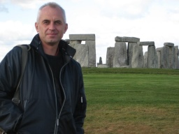

Kombinací nejnovějších poznatků na poli homeopatie spolu s psychologií byl vyvinut nový způsob odebírání homeopatických
případů tzv. anamnézy, díky kterému lze proniknout hluboko ke kořenům potíží neboli nemoci. Homeopatikum předepsané na
této hluboké úrovni má silný a trvalý účinek a dokáže opět nastolit harmonii, což znamená zdraví na tělesné i duševní
rovině.
Hlubinná homeopatie je syntézou západního a východního filozofického pohledu. Západní pilíř je reprezentován myslí,
levou mozkovou hemisférou. Je to věda. V praxi jde o sbírání symptomů pacienta a vyhodnocování jejich důležitosti a
následné hledání léku pomocí repertorií a materií medik, dnes nejčastěji pomocí počítačových programů.
Východní pilíř je reprezentován intuicí, pravou mozkovou hemisférou. Je to umění. V praxi jde o vnímání homeopatických
léků jako součást systémů, zejména biologických říší ( minerální, rostlinná, živočišná) a miasmatických skupin ( v
pojetí deseti miasmat dle Sankarana).
Hlubinná homeopatie je tedy vpravdě celostní metodou.
Vystudoval jsem lékařskou fakultu Univerzity Karlovy a po promoci v roce 1988 jsem nastoupil jako chirurg do nemocnice.
Přišel rok 1989, s ním sametová revoluce, otevřely se nové možnosti ve všech oblastech života, včetně alternativních
směrů. Asi ne náhodou jsem se dostal k holotropnímu dýchání.

Holotropní dýchání úplně změnilo můj náhled na svět, který do té doby znal jen" materialistický vědecký světový názor",
hlásaný bývalou totalitní ideologií. Přibližně ve stejné době jsem zjistil, že nedokážu klasickou školní medicínou
pomoci svým blízkým s chronickými obtížemi. Tak jsem objevil homeopatii, nejprve formou homeopata, který mým blízkým
opravdu pomohl.
Začal jsem se o homeopatii více zajímat, studoval jsem vše, co se dalo. Souběžně s tím běžela má chirurgická dráha -
1.atestace z chirurgie, 2.atestace z chirurgie, spousta provedených operací..
Po složení 2.atestace z chirurgie už jsem nemusel veškerou energii věnovat studiu chirurgie, tak zbylo více času na mou
„tajnou lásku" homeopatii. Začal jsem navštěvovat kurzy Homeopatické akademie v Praze. Zde na jedné přednášce
zahraničního lektora jsem poprvé slyšel o Rajanu Sankaranovi a jeho indické škole. Hluboce mě to oslovilo, okamžitě jsem
věděl, že takto chci homeopatii dělat.
Shodou okolností jsem už v té době pracoval v Německu, kde jsou všechny publikace a knihy Rajana Sankarana bez problémů
dostupné. Začal jsem intenzivně studovat jeho teorii. Praxi této metody jsem si osvojil na seminářích vedených přímo Dr.
Sankaranem v Německu.
Kromě seminářů u Dr. Sankarana jsem absolvoval řadu dalších pravidelných seminářů u Maheshe Gandhího, Michal Yakir, Jana
Scholtena, Sunila Ananda a Jayeshe Shaha . Velmi cenná pro mě jsou má setkávání s mými homeopatickými kolegy na
zahraničních kongresech a seminářích. Za všechny uvádím např. Mika Keszlera, Andrease Hollinga, Williho Neuholda, Anne
Schadde, ale celý výčet by byl mnohem delší. Pravidelná setkávání s nimi, diskuse a výměny zkušeností považuji za to
nejcennější, čeho se mi na mé homeopatické cestě dostává.
A v neposlední řadě jsou to mí pacienti, díky kterým se stále učím a díky kterým vidím, že to, co děláme, má hlubší
smysl. Jsem vděčný jim, i osudu, že mohu být na chvíli součástí jejich cesty.